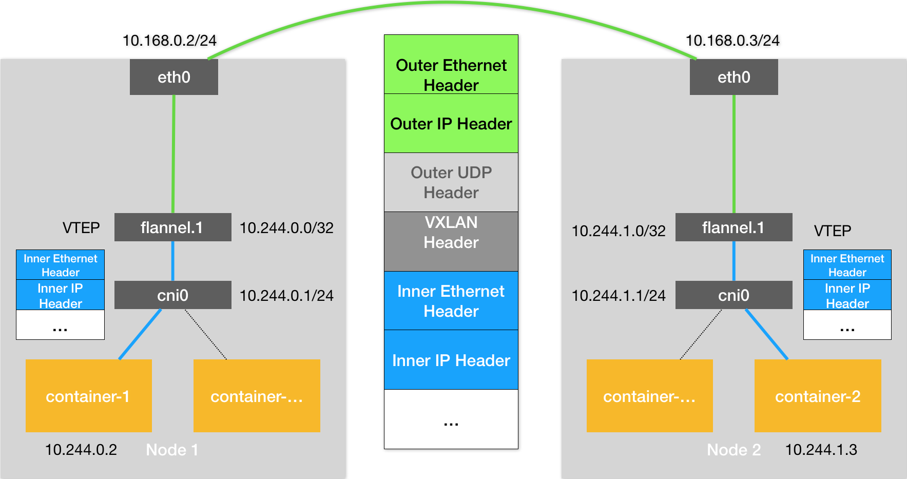

# Kubernetes 网络模型与 CNI 网络插件
在上一篇文章中，我以 Flannel 项目为例，为你详细讲解了容器跨主机网络的两种实现方法：UDP 和 VXLAN。
不难看到，这些例子有一个共性，那就是用户的容器都连接在 docker0 网桥上。而网络插件则在宿主机上创建了一个特殊的设备（UDP 模式创建的是 TUN 设备，VXLAN 模式创建的则是 VTEP 设备），docker0 与这个设备之间，通过 IP 转发（路由表）进行协作。
然后，网络插件真正要做的事情，则是通过某种方法，把不同宿主机上的特殊设备连通，从而达到容器跨主机通信的目的。
实际上，上面这个流程，也正是 Kubernetes 对容器网络的主要处理方法。只不过，Kubernetes 是通过一个叫作 CNI 的接口，维护了一个单独的网桥来代替 docker0。这个网桥的名字就叫作：CNI 网桥，它在宿主机上的设备名称默认是：cni0。
以 Flannel 的 VXLAN 模式为例，在 Kubernetes 环境里，它的工作方式跟我们在上一篇文章中讲解的没有任何不同。只不过，docker0 网桥被替换成了 CNI 网桥而已，如下所示：

在这里，Kubernetes 为 Flannel 分配的子网范围是 10.244.0.0/16。这个参数可以在部署的时候指定，比如：
$ kubeadm init --pod-network-cidr=10.244.0.0/16
也可以在部署完成后，通过修改 kube-controller-manager 的配置文件来指定。
这时候，假设 Infra-container-1 要访问 Infra-container-2（也就是 Pod-1 要访问 Pod-2），这个 IP 包的源地址就是 10.244.0.2，目的 IP 地址是 10.244.1.3。而此时，Infra-container-1 里的 eth0 设备，同样是以 Veth Pair 的方式连接在 Node 1 的 cni0 网桥上。所以这个 IP 包就会经过 cni0 网桥出现在宿主机上。
此时，Node 1 上的路由表，如下所示：
# 在Node 1上
$ route -n
Kernel IP routing table
Destination Gateway Genmask Flags Metric Ref Use Iface
...
10.244.0.0 0.0.0.0 255.255.255.0 U 0 0 0 cni0
10.244.1.0 10.244.1.0 255.255.255.0 UG 0 0 0 flannel.1
172.17.0.0 0.0.0.0 255.255.0.0 U 0 0 0 docker0
因为我们的 IP 包的目的 IP 地址是 10.244.1.3，所以它只能匹配到第二条规则，也就是 10.244.1.0 对应的这条路由规则。
可以看到，这条规则指定了本机的 flannel.1 设备进行处理。并且，flannel.1 在处理完后，要将 IP 包转发到的网关（Gateway），正是 “隧道” 另一端的 VTEP 设备，也就是 Node 2 的 flannel.1 设备。所以，接下来的流程，就跟上一篇文章中介绍过的 Flannel VXLAN 模式完全一样了。
需要注意的是，CNI 网桥只是接管所有 CNI 插件负责的、即 Kubernetes 创建的容器（Pod）。而此时，如果你用 docker run 单独启动一个容器，那么 Docker 项目还是会把这个容器连接到 docker0 网桥上。所以这个容器的 IP 地址，一定是属于 docker0 网桥的 172.17.0.0/16 网段。
Kubernetes 之所以要设置这样一个与 docker0 网桥功能几乎一样的 CNI 网桥，主要原因包括两个方面：
一方面，Kubernetes 项目并没有使用 Docker 的网络模型（CNM），所以它并不希望、也不具备配置 docker0 网桥的能力；
另一方面，这还与 Kubernetes 如何配置 Pod，也就是 Infra 容器的 Network Namespace 密切相关。
我们知道，Kubernetes 创建一个 Pod 的第一步，就是创建并启动一个 Infra 容器，用来 “hold” 住这个 Pod 的 Network Namespace（这里，你可以再回顾一下专栏第 13 篇文章《为什么我们需要 Pod？》中的相关内容）。
所以，CNI 的设计思想，就是：Kubernetes 在启动 Infra 容器之后，就可以直接调用 CNI 网络插件，为这个 Infra 容器的 Network Namespace，配置符合预期的网络栈。
备注：在前面第 32 篇文章《浅谈容器网络》中，我讲解单机容器网络时，已经和你分享过，一个 Network Namespace 的网络栈包括：网卡（Network Interface）、回环设备（Loopback Device）、路由表（Routing Table）和 iptables 规则。
那么，这个网络栈的配置工作又是如何完成的呢？
为了回答这个问题，我们就需要从 CNI 插件的部署和实现方式谈起了。
我们在部署 Kubernetes 的时候，有一个步骤是安装 kubernetes-cni 包，它的目的就是在宿主机上安装 CNI 插件所需的基础可执行文件。
在安装完成后，你可以在宿主机的 /opt/cni/bin 目录下看到它们，如下所示：
$ ls -al /opt/cni/bin/
total 73088
-rwxr-xr-x 1 root root 3890407 Aug 17 2017 bridge
-rwxr-xr-x 1 root root 9921982 Aug 17 2017 dhcp
-rwxr-xr-x 1 root root 2814104 Aug 17 2017 flannel
-rwxr-xr-x 1 root root 2991965 Aug 17 2017 host-local
-rwxr-xr-x 1 root root 3475802 Aug 17 2017 ipvlan
-rwxr-xr-x 1 root root 3026388 Aug 17 2017 loopback
-rwxr-xr-x 1 root root 3520724 Aug 17 2017 macvlan
-rwxr-xr-x 1 root root 3470464 Aug 17 2017 portmap
-rwxr-xr-x 1 root root 3877986 Aug 17 2017 ptp
-rwxr-xr-x 1 root root 2605279 Aug 17 2017 sample
-rwxr-xr-x 1 root root 2808402 Aug 17 2017 tuning
-rwxr-xr-x 1 root root 3475750 Aug 17 2017 vlan
这些 CNI 的基础可执行文件，按照功能可以分为三类：
** 第一类，叫作 Main 插件，它是用来创建具体网络设备的二进制文件。** 比如，bridge（网桥设备）、ipvlan、loopback（lo 设备）、macvlan、ptp（Veth Pair 设备），以及 vlan。
我在前面提到过的 Flannel、Weave 等项目，都属于 “网桥” 类型的 CNI 插件。所以在具体的实现中，它们往往会调用 bridge 这个二进制文件。这个流程，我马上就会详细介绍到。
第二类，叫作 IPAM（IP Address Management）插件，它是负责分配 IP 地址的二进制文件。比如，dhcp，这个文件会向 DHCP 服务器发起请求；host-local，则会使用预先配置的 IP 地址段来进行分配。
第三类，是由 CNI 社区维护的内置 CNI 插件。比如：flannel，就是专门为 Flannel 项目提供的 CNI 插件；tuning，是一个通过 sysctl 调整网络设备参数的二进制文件；portmap，是一个通过 iptables 配置端口映射的二进制文件；bandwidth，是一个使用 Token Bucket Filter (TBF) 来进行限流的二进制文件。
从这些二进制文件中，我们可以看到，如果要实现一个给 Kubernetes 用的容器网络方案，其实需要做两部分工作，以 Flannel 项目为例：
首先，实现这个网络方案本身。这一部分需要编写的，其实就是 flanneld 进程里的主要逻辑。比如，创建和配置 flannel.1 设备、配置宿主机路由、配置 ARP 和 FDB 表里的信息等等。
然后，实现该网络方案对应的 CNI 插件。这一部分主要需要做的，就是配置 Infra 容器里面的网络栈，并把它连接在 CNI 网桥上。
由于 Flannel 项目对应的 CNI 插件已经被内置了，所以它无需再单独安装。而对于 Weave、Calico 等其他项目来说，我们就必须在安装插件的时候，把对应的 CNI 插件的可执行文件放在 /opt/cni/bin/ 目录下。
实际上，对于 Weave、Calico 这样的网络方案来说，它们的 DaemonSet 只需要挂载宿主机的 /opt/cni/bin/，就可以实现插件可执行文件的安装了。你可以想一下具体应该怎么做，就当作一个课后小问题留给你去实践了。
接下来，你就需要在宿主机上安装 flanneld（网络方案本身）。而在这个过程中，flanneld 启动后会在每台宿主机上生成它对应的 CNI 配置文件（它其实是一个 ConfigMap），从而告诉 Kubernetes，这个集群要使用 Flannel 作为容器网络方案。
这个 CNI 配置文件的内容如下所示：
$ cat /etc/cni/net.d/10-flannel.conflist
{
"name": "cbr0",
"plugins": [
{
"type": "flannel",
"delegate": {
"hairpinMode": true,
"isDefaultGateway": true
}
},
{
"type": "portmap",
"capabilities": {
"portMappings": true
}
}
]
}
需要注意的是，在 Kubernetes 中，处理容器网络相关的逻辑并不会在 kubelet 主干代码里执行，而是会在具体的 CRI（Container Runtime Interface，容器运行时接口）实现里完成。对于 Docker 项目来说，它的 CRI 实现叫作 dockershim，你可以在 kubelet 的代码里找到它。
所以，接下来 dockershim 会加载上述的 CNI 配置文件。
需要注意，Kubernetes 目前不支持多个 CNI 插件混用。如果你在 CNI 配置目录（/etc/cni/net.d）里放置了多个 CNI 配置文件的话，dockershim 只会加载按字母顺序排序的第一个插件。
但另一方面，CNI 允许你在一个 CNI 配置文件里，通过 plugins 字段，定义多个插件进行协作。
比如，在我们上面这个例子里，Flannel 项目就指定了 flannel 和 portmap 这两个插件。
这时候，dockershim 会把这个 CNI 配置文件加载起来，并且把列表里的第一个插件、也就是 flannel 插件，设置为默认插件。而在后面的执行过程中，flannel 和 portmap 插件会按照定义顺序被调用，从而依次完成 “配置容器网络” 和 “配置端口映射” 这两步操作。
接下来，我就来为你讲解一下这样一个 CNI 插件的工作原理。
当 kubelet 组件需要创建 Pod 的时候，它第一个创建的一定是 Infra 容器。所以在这一步，dockershim 就会先调用 Docker API 创建并启动 Infra 容器，紧接着执行一个叫作 SetUpPod 的方法。这个方法的作用就是：为 CNI 插件准备参数，然后调用 CNI 插件为 Infra 容器配置网络。
这里要调用的 CNI 插件，就是 /opt/cni/bin/flannel；而调用它所需要的参数，分为两部分。
第一部分，是由 dockershim 设置的一组 CNI 环境变量。
其中，最重要的环境变量参数叫作：CNI_COMMAND。它的取值只有两种：ADD 和 DEL。
这个 ADD 和 DEL 操作，就是 CNI 插件唯一需要实现的两个方法。
其中 ADD 操作的含义是：把容器添加到 CNI 网络里；DEL 操作的含义则是：把容器从 CNI 网络里移除掉。
而对于网桥类型的 CNI 插件来说，这两个操作意味着把容器以 Veth Pair 的方式 “插” 到 CNI 网桥上，或者从网桥上 “拔” 掉。
接下来，我以 ADD 操作为重点进行讲解。
CNI 的 ADD 操作需要的参数包括：容器里网卡的名字 eth0（CNI_IFNAME）、Pod 的 Network Namespace 文件的路径（CNI_NETNS）、容器的 ID（CNI_CONTAINERID）等。这些参数都属于上述环境变量里的内容。其中，Pod（Infra 容器）的 Network Namespace 文件的路径，我在前面讲解容器基础的时候提到过，即：/proc/<容器进程的 PID>/ns/net。
备注：这里你也可以再回顾下专栏第 8 篇文章《白话容器基础（四）：重新认识 Docker 容器》中的相关内容。
除此之外，在 CNI 环境变量里，还有一个叫作 CNI_ARGS 的参数。通过这个参数，CRI 实现（比如 dockershim）就可以以 Key-Value 的格式，传递自定义信息给网络插件。这是用户将来自定义 CNI 协议的一个重要方法。
第二部分，则是 dockershim 从 CNI 配置文件里加载到的、默认插件的配置信息。
这个配置信息在 CNI 中被叫作 Network Configuration，它的完整定义你可以参考这个文档。dockershim 会把 Network Configuration 以 JSON 数据的格式，通过标准输入（stdin）的方式传递给 Flannel CNI 插件。
而有了这两部分参数，Flannel CNI 插件实现 ADD 操作的过程就非常简单了。
不过，需要注意的是，Flannel 的 CNI 配置文件（ /etc/cni/net.d/10-flannel.conflist）里有这么一个字段，叫作 delegate：
...
"delegate": {
"hairpinMode": true,
"isDefaultGateway": true
}
Delegate 字段的意思是，这个 CNI 插件并不会自己做事儿，而是会调用 Delegate 指定的某种 CNI 内置插件来完成。对于 Flannel 来说，它调用的 Delegate 插件，就是前面介绍到的 CNI bridge 插件。
所以说，dockershim 对 Flannel CNI 插件的调用，其实就是走了个过场。Flannel CNI 插件唯一需要做的，就是对 dockershim 传来的 Network Configuration 进行补充。比如，将 Delegate 的 Type 字段设置为 bridge，将 Delegate 的 IPAM 字段设置为 host-local 等。
经过 Flannel CNI 插件补充后的、完整的 Delegate 字段如下所示：
{
"hairpinMode":true,
"ipMasq":false,
"ipam":{
"routes":[
{
"dst":"10.244.0.0/16"
}
],
"subnet":"10.244.1.0/24",
"type":"host-local"
},
"isDefaultGateway":true,
"isGateway":true,
"mtu":1410,
"name":"cbr0",
"type":"bridge"
}
其中，ipam 字段里的信息，比如 10.244.1.0/24，读取自 Flannel 在宿主机上生成的 Flannel 配置文件，即：宿主机上的 /run/flannel/subnet.env 文件。
接下来，Flannel CNI 插件就会调用 CNI bridge 插件，也就是执行：/opt/cni/bin/bridge 二进制文件。
这一次，调用 CNI bridge 插件需要的两部分参数的第一部分、也就是 CNI 环境变量，并没有变化。所以，它里面的 CNI_COMMAND 参数的值还是 “ADD”。
而第二部分 Network Configration，正是上面补充好的 Delegate 字段。Flannel CNI 插件会把 Delegate 字段的内容以标准输入（stdin）的方式传递给 CNI bridge 插件。
此外，Flannel CNI 插件还会把 Delegate 字段以 JSON 文件的方式，保存在 /var/lib/cni/flannel 目录下。这是为了给后面删除容器调用 DEL 操作时使用的。
有了这两部分参数，接下来 CNI bridge 插件就可以 “代表” Flannel，进行 “将容器加入到 CNI 网络里” 这一步操作了。而这一部分内容，与容器 Network Namespace 密切相关，所以我要为你详细讲解一下。
首先，CNI bridge 插件会在宿主机上检查 CNI 网桥是否存在。如果没有的话，那就创建它。这相当于在宿主机上执行：
# 在宿主机上
$ ip link add cni0 type bridge
$ ip link set cni0 up
接下来，CNI bridge 插件会通过 Infra 容器的 Network Namespace 文件，进入到这个 Network Namespace 里面，然后创建一对 Veth Pair 设备。
紧接着，它会把这个 Veth Pair 的其中一端，“移动” 到宿主机上。这相当于在容器里执行如下所示的命令：
#在容器里
# 创建一对Veth Pair设备。其中一个叫作eth0，另一个叫作vethb4963f3
$ ip link add eth0 type veth peer name vethb4963f3
# 启动eth0设备
$ ip link set eth0 up
# 将Veth Pair设备的另一端（也就是vethb4963f3设备）放到宿主机（也就是Host Namespace）里
$ ip link set vethb4963f3 netns $HOST_NS
# 通过Host Namespace，启动宿主机上的vethb4963f3设备
$ ip netns exec $HOST_NS ip link set vethb4963f3 up
这样，vethb4963f3 就出现在了宿主机上，而且这个 Veth Pair 设备的另一端，就是容器里面的 eth0。
当然，你可能已经想到，上述创建 Veth Pair 设备的操作，其实也可以先在宿主机上执行，然后再把该设备的一端放到容器的 Network Namespace 里，这个原理是一样的。
不过，CNI 插件之所以要 “反着” 来，是因为 CNI 里对 Namespace 操作函数的设计就是如此，如下所示：
err := containerNS.Do(func(hostNS ns.NetNS) error {
...
return nil
})
这个设计其实很容易理解。在编程时，容器的 Namespace 是可以直接通过 Namespace 文件拿到的；而 Host Namespace，则是一个隐含在上下文的参数。所以，像上面这样，先通过容器 Namespace 进入容器里面，然后再反向操作 Host Namespace，对于编程来说要更加方便。
接下来，CNI bridge 插件就可以把 vethb4963f3 设备连接在 CNI 网桥上。这相当于在宿主机上执行：
# 在宿主机上
$ ip link set vethb4963f3 master cni0
在将 vethb4963f3 设备连接在 CNI 网桥之后，CNI bridge 插件还会为它设置 Hairpin Mode（发夹模式）。这是因为，在默认情况下，网桥设备是不允许一个数据包从一个端口进来后，再从这个端口发出去的。但是，它允许你为这个端口开启 Hairpin Mode，从而取消这个限制。
这个特性，主要用在容器需要通过 NAT（即：端口映射）的方式，“自己访问自己” 的场景下。
举个例子，比如我们执行 docker run -p 8080:80，就是在宿主机上通过 iptables 设置了一条 DNAT（目的地址转换）转发规则。这条规则的作用是，当宿主机上的进程访问 “<宿主机的 IP 地址>:8080” 时，iptables 会把该请求直接转发到 “< 容器的 IP 地址 >:80” 上。也就是说，这个请求最终会经过 docker0 网桥进入容器里面。
但如果你是在容器里面访问宿主机的 8080 端口，那么这个容器里发出的 IP 包会经过 vethb4963f3 设备（端口）和 docker0 网桥，来到宿主机上。此时，根据上述 DNAT 规则，这个 IP 包又需要回到 docker0 网桥，并且还是通过 vethb4963f3 端口进入到容器里。所以，这种情况下，我们就需要开启 vethb4963f3 端口的 Hairpin Mode 了。
所以说，Flannel 插件要在 CNI 配置文件里声明 hairpinMode=true。这样，将来这个集群里的 Pod 才可以通过它自己的 Service 访问到自己。
接下来，CNI bridge 插件会调用 CNI ipam 插件，从 ipam.subnet 字段规定的网段里为容器分配一个可用的 IP 地址。然后，CNI bridge 插件就会把这个 IP 地址添加在容器的 eth0 网卡上，同时为容器设置默认路由。这相当于在容器里执行：
# 在容器里
$ ip addr add 10.244.0.2/24 dev eth0
$ ip route add default via 10.244.0.1 dev eth0
最后，CNI bridge 插件会为 CNI 网桥添加 IP 地址。这相当于在宿主机上执行：
# 在宿主机上
$ ip addr add 10.244.0.1/24 dev cni0
在执行完上述操作之后，CNI 插件会把容器的 IP 地址等信息返回给 dockershim，然后被 kubelet 添加到 Pod 的 Status 字段。
至此，CNI 插件的 ADD 方法就宣告结束了。接下来的流程，就跟我们上一篇文章中容器跨主机通信的过程完全一致了。
需要注意的是，对于非网桥类型的 CNI 插件，上述 “将容器添加到 CNI 网络” 的操作流程，以及网络方案本身的工作原理，就都不太一样了。我将会在后续文章中，继续为你分析这部分内容。
总结
在本篇文章中，我为你详细讲解了 Kubernetes 中 CNI 网络的实现原理。根据这个原理，你其实就很容易理解所谓的 “Kubernetes 网络模型” 了：
所有容器都可以直接使用 IP 地址与其他容器通信，而无需使用 NAT。
所有宿主机都可以直接使用 IP 地址与所有容器通信，而无需使用 NAT。反之亦然。
容器自己 “看到” 的自己的 IP 地址，和别人（宿主机或者容器）看到的地址是完全一样的。
可以看到，这个网络模型，其实可以用一个字总结，那就是 “通”。
容器与容器之间要 “通”，容器与宿主机之间也要 “通”。并且，Kubernetes 要求这个 “通”，还必须是直接基于容器和宿主机的 IP 地址来进行的。
当然，考虑到不同用户之间的隔离性，在很多场合下，我们还要求容器之间的网络 “不通”。这个问题，我会在后面的文章中会为你解决。
思考题
请你思考一下，为什么 Kubernetes 项目不自己实现容器网络，而是要通过 CNI 做一个如此简单的假设呢？